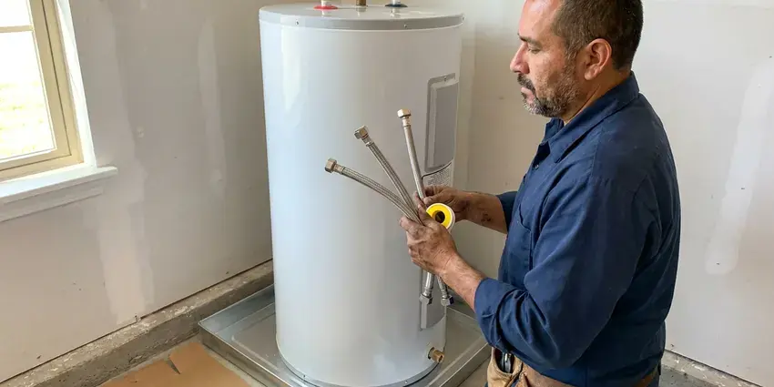
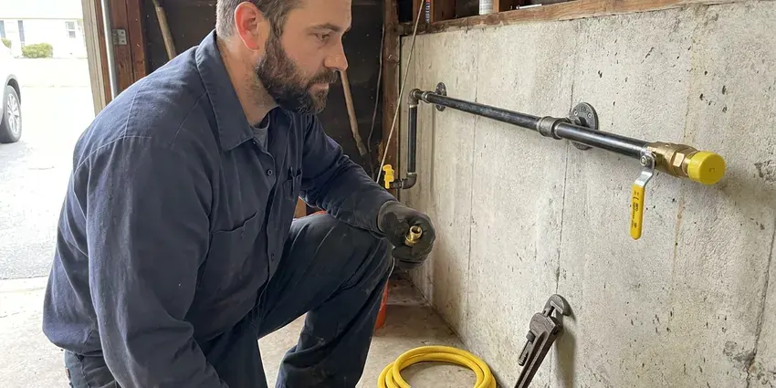

PEX Pipe Installation in West Jordan, UT
BPK Plumbing replaces failing copper and gray polybutylene with PEX in West Jordan, UT, with small, tidy wall openings.
- Licensed PEX Installers
- Written Quotes
- Permit Handled
- Tested Before Walls Close

A Single Repipe, No More Pinhole Leaks in West Jordan, UT
A tech walks the house, counts fixtures and leaves a written price.
PEX Installation in West Jordan, UT From BPK Plumbing
BPK Plumbing puts in PEX for homeowners who want water lines that tolerate a hard freeze better than copper. Copper tends to split when water freezes in it, while PEX swells and usually survives. Freezing temperatures are a regular part of Utah winters, and pipes in garages, crawlspaces and exterior walls can freeze during cold stretches. It is not freeze-proof. We still insulate exterior wall runs and keep lines out of unheated spaces like garages and vented crawlspaces whenever the framing allows it.
Work we handle every week:
- PEX-A expansion fittings (ProPEX style)
- Home-run manifold layouts with separate shutoffs
- Overhead repipes that abandon leaking slab lines

Additional Plumbing Installation Services in West Jordan, UT
We install water heaters, pumps, lines, and fixtures across West Jordan, UT with careful, permitted work that passes inspection the first time.


Water Heater Installation in West Jordan


Customers
Why Choose BPK Plumbing for PEX Pipe Installation in West Jordan, UT?
Manufacturer rules for PEX are specific: supports about every 32 inches on horizontal runs, a minimum bend radius, and no long sun exposure. Our crews follow them. Skipping them leads to kinks, sagging lines and fittings that strain, and it can void the pipe warranty the manufacturer would otherwise honor.
- Home-Run Option, Each fixture can get its own line off a manifold and its own shutoff.
- No Scale Buildup, Mineral scale does not grab hold on the slick inside surface.
- Chlorine Rated, Code-listed PEX is tested for chlorinated city water at hot-water temperatures.
Citywide Coverage
From 1970s ranch houses with galvanized lines to 1990s builds with gray poly, we repipe homes all over West Jordan. A ranch with a big attic routes easily, but a two-story needs a careful plan to reach upstairs baths without cutting finished ceilings. We plan it before cutting.
Experienced Team
Training at BPK Plumbing covers current PEX products. Fitting designs and tool heads change every few years, and using an old crimp head on a new fitting can produce a joint that looks fine and then weeps under pressure. Our crews stay current.
Safety-First Approach
Before, during and after the work, your house stays protected. Floors get covered, furniture gets moved or draped, and dust is contained with plastic sheeting in any room where we open drywall in your West Jordan home. Cleanup is daily.
Trusted Certified West Jordan Plumbing Services Professionals
At BPK Plumbing, we take pride in licensed, certified plumbing services throughout West Jordan, UT. Credentials matter in this trade. Our plumbers hold recognized industry credentials, and they follow strict safety and quality rules on every repair, installation and maintenance call we run.
Call Us Now PHCC Plumbing Contractor Recognition
PHCC Plumbing Contractor Recognition Better Business Bureau (BBB) Accreditation
Better Business Bureau (BBB) Accreditation Angi Certified Pro
Angi Certified Pro ISO 9001 Quality Management Certification
ISO 9001 Quality Management CertificationPEX Water Line Work We Do in West Jordan, UT
Uponor PEX System Installation in West Jordan
Uponor's ProPEX system is PEX-A joined with an expansion tool and a cold-expansion ring. The tech expands the pipe and ring together, pushes the fitting in, and the plastic shrinks back around the barb over the next few seconds, tighter than when it started. No crimp tool to calibrate. Because the fittings are wide inside, each joint costs very little flow.

Full Home PEX Repiping in West Jordan
Galvanized steel rusts from the inside out. Give it four or five decades and the inside is so packed with rust that a half-inch pipe barely flows, and the first draw in the morning runs brown. A full PEX repipe replaces all of it. Pressure comes back at the fixtures and the rust stops.
PEX for Water Line Replacement in West Jordan
Your service line runs from the meter or well to the house, often a foot and a half to three feet underground. Because PEX comes on a long coil, the whole run from the meter to the foundation can go in with zero buried fittings. Rocky ground can make sewer line and water service repairs more involved, and trenchless methods are often a good fit where digging is tough. We bed it in sand. Sharp rock against plastic pipe is how a new line fails early.
Emergency PEX Pipe Services in West Jordan, UT
A burst line after the house is asleep starts with the main shutoff. Close it if you can, then call (385) 543-4073 and we will talk you through draining the lines while a plumber heads to your house in West Jordan, UT. The fix is usually fast with PEX. We remove the damaged stretch and splice new pipe in, frequently inside an hour.
PEX Main Water Line Installation in West Jordan
The main from the meter to the house is the one line everything else depends on. A leaking old service line shows up as a soggy patch in the yard, a higher water bill and weak pressure everywhere. We trench and lay new PEX. At the house we add a new full-port ball valve for the main shutoff.
Commercial PEX Pipe Solutions in West Jordan, UT
Apartment buildings, small offices and churches in West Jordan, UT are good candidates for PEX as much as houses can. Each unit can get its own manifold and shutoff, so a leak in one apartment shuts down one apartment instead of the whole stack. Fire-rated walls need care. Every penetration through a fire-rated wall gets a listed firestop sleeve or sealant.
PEX-A vs. PEX-B Installation in West Jordan
Homeowners ask us which one is better, and the honest answer depends on the job. PEX-A makes tighter bends, can be heat-fixed if it kinks, and its fittings flow better, while PEX-B is cheaper and its crimps hold just as well when each one is gauged. Both last decades. For tight attics we lean toward PEX-A.

Copper to PEX Conversions in West Jordan
Pinhole leaks in copper rarely show up alone. Aggressive water, fast flow and soil contact under slabs can pit copper from the inside, and the first few pinholes are typically followed by more. Mineral deposits reduce the life of tankless and tank water heaters alike, so regular flushing or descaling is worth the time. Converting to PEX stops the cycle. Where new PEX meets existing copper stubs or valves, we use listed transition fittings.
PEX Installers Near You in West Jordan, UT
Being close by lets us move fast on the small stuff. A leaking PEX fitting under a sink, a manifold valve that will not close or a split line in an attic after a cold night are jobs we can often reach the same day in West Jordan. The trucks carry fittings. Half-inch through one-inch, both expansion and crimp.
Our crews repipe homes in West Jordan on a regular basis, so we have seen most of the local house styles. Split-levels over finished basements, low-attic slab ranches and two-story houses with stacked baths each route differently, and knowing that going in keeps the cuts small. Fewer surprises mid-job. You get a schedule we can keep.
BPK Plumbing at a Glance
- Licensed and insured plumbers serving West Jordan, UT
- Same-day appointments and 24/7 emergency response
- Upfront, flat-rate pricing before work begins
- 4.8-star rated by 470+ Utah customers
West Jordan Map
West Jordan Information
- Population
- 114,908
- Area codes
- 801/385/435
- Service area
- West Jordan and towns within a 40 mile drive
- Nearby
- South Jordan, Taylorsville, West Valley City, Murray
Recurring pinhole leaks usually means the pipe is done, and a PEX repipe run overhead and down the walls ends the patching.
Expert Services
Reach out to BPK Plumbing for reliable plumbing work done by licensed pros in West Jordan, UT.
Our Specialized Plumbing Services in West Jordan, UT
At BPK Plumbing, we handle the full list of plumbing services across West Jordan, UT. From leak detection to full system installs, our team works fast and charges fair prices on homes and commercial properties alike. Take a look at our core services below:


How We Handle a PEX Repipe in West Jordan, UT
We open small, test everything, then patch. Here is the order.
Request a Quote
Call (385) 543-4073 or fill out our form to set up a visit. We will ask a few questions about the house first.
Assess and Plan
In your West Jordan home, a plumber checks the existing lines and maps the route. We mark every opening first.
Install and Test
PEX goes in, every joint gets made, and the system is held at test pressure. A bad joint shows while the wall is open.
Frequently Asked Questions About PEX Pipe Installation in West Jordan
A typical whole-home PEX repipe costs $4,500 to $12,000, depending on size, bathroom count and access. A single bathroom remodel rough-in usually runs $800 to $2,500.
Fifty years is the common rating, and it may well go longer when kept out of sunlight and away from heat.
From a single hour up to a week, depending on scope. A small repair or extension in West Jordan often takes a few hours, and a full repipe on an average home usually runs two to five days. Bigger homes take longer.
Buried, yes. Exposed to the sun, no. UV light breaks down PEX within months, so above-ground runs need to be sleeved, painted over a listed sleeve or kept inside a wall or enclosure.
PEX copes with both heat and cold. Higher elevations in and around West Jordan bring colder nights and longer winters, which puts extra load on water heaters and heating systems. Rigid pipe can split when the water in it freezes, while PEX usually stretches and survives, so freeze breaks are far less common than with copper. Indoor heat does not bother it. We still keep it clear of flues and hot attic spots.
Most full repipes in West Jordan run three to five working days. One bathroom or a single line is often a one-day job, and on longer jobs we try to have water back on every night. You get the day-by-day plan first.
Several pinhole leaks, tinted water, low pressure through the whole house, or gray poly pipe. More than one slab leak is a good reason to reroute overhead.
Uponor for PEX-A, and Viega and Zurn for PEX-B. We also use SharkBite push fittings in spots where a crimp tool cannot reach.
What Our Customers Say About Our Plumbing Experts

Mark T.
The floor drain in our office break room backed up every few weeks. The plumber ran a cable, then put a camera down and found roots at a joint about thirty feet out. Seeing it on the screen made the decision easy.
Drain Cleaning · South Jordan, UT
Rachel N.
Hard water was leaving white crust on every faucet and our dishwasher was struggling. The tech tested the water, recommended a softener sized for a family of five, and installed it with a bypass valve in one afternoon. The spots on our glasses are gone.
Water Softener · South Jordan, UT
Laura S.
Our 40 gallon tank started leaking from the bottom after thirteen years. The tech hauled the old one out, set a new unit with a fresh expansion tank, and had hot water running in about four hours. He took the old tank with him too.
Water Heater Replacement · West Jordan, UT
Nathan E.
Our tankless heater kept throwing an error code and shutting off mid shower. The tech flushed the heat exchanger, which was full of scale, and replaced a bad flow sensor. Hot water has been steady for half a year now.
Water Heater Repair · West Valley City, UTSofia M.
Two new toilets went in during one visit. The tech set them on new wax rings and swapped the old supply lines. He also noticed our bathroom faucet dripping and replaced the cartridge while he was there. No mess left behind.
Toilet Installation · West Jordan, UT
James P.
Our restaurant had a slow leak at the hand sink that was rotting the cabinet base. BPK Plumbing came in at six in the morning before prep, replaced the trap and both supply lines, and was packed up before my first cook clocked in.
Commercial Plumbing · West Valley City, UT